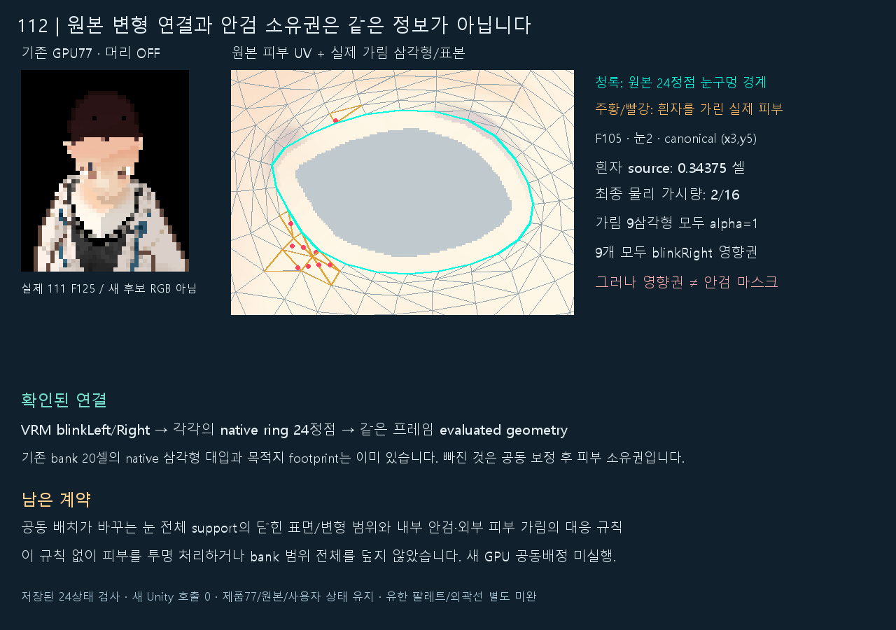

기존 GPU77과 실제 원본 UV·가림 표본입니다. 새 공동 배정 결과가 아닙니다. Unity/Play 호출 0, 제품 기본값 변경 0.

단안 blink가 등록 ring 각24정점을 식별합니다. 그러나 피부 blink 영향 영역은 양눈을 연결하고 단안 영향도 피부43정점에서 겹칩니다. 안검 색소848점은 별도 mesh/UV 경로이며 피부 surface의 내부/외부 가림 분류를 제공하지 않습니다.
완전 Close에서는 I/W source가0인데도 피부 ring 면적이 남습니다. 원형 parent/상부 색소 경계만으로 새로운 눈 전체의 닫힌 support 표면과 깊이/가림 대응을 정의할 수 있다고 가정하지 않았습니다.
최소 반례: F105 눈2 (x3,y5), source white0.34375셀, 물리 노출2/16. 가림9삼각형의 실제 alpha는 모두1입니다. 이것을 skin/bank 규칙으로 투명화하지 않았습니다. 추가 같은 데이터 캡처 대신 source-local support/cage 및 내부/외부 가림 transfer 정의가 필요합니다. 이는 기존 정식화의 공백이며 불가능성 증명이 아닙니다.
최신 검토 질문과 코드 위치는 저장소 docs/ai/PIXEL_ALBEDO_20261030.md 112절 하나에 있습니다.
적용 구분 · source cache / 미정 필드 · 24상태·9삼각형 증거 · 회귀 검사 · 함수 위치